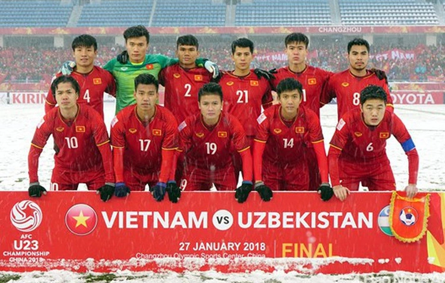

Hoạt động năng nổ và hiệu quả
Cháy hết mình trong các cuộc chơi
Giành những giải thưởng cao nhất
Trong lịch sử bóng đá Việt Nam, có những giải đấu vượt khỏi khuôn mẫu của những con số thống kê để trở thành biểu tượng văn hóa. Trận chung kết U23 châu Á 2018 tại Thường Châu chính là một cột mốc như vậy. Dưới sự dẫn dắt của HLV Park Hang-seo, các cầu thủ trẻ đã viết nên một thiên sử thi giữa bão tuyết mịt mù, thay đổi hoàn toàn tâm thế của một nền bóng đá.
U23 Việt Nam tại Thường Châu 2018
U23 Việt Nam đã viết nên một trong những câu chuyện bi tráng nhất tại Thường Châu năm 2018.

Cuộc đối đầu không cân sức trong lòng 'hoang mạc băng giá'
Ngày 27/01/2018, sân vận động Thường Châu hiện ra như một hoang mạc trắng xóa. Tuyết rơi dày đặc với mật độ kỷ lục, che lấp các vạch vôi và làm giảm tầm nhìn nghiêm trọng. Trong điều kiện nhiệt độ dưới độ âm, U23 Việt Nam — những đôi chân nhiệt đới lần đầu chạm tuyết — phải đối đầu với U23 Uzbekistan, đội bóng vốn đã quá quen thuộc với khí hậu Trung Á khắc nghiệt.
Trận chung kết bắt đầu không phải bằng những đường bóng mượt mà, mà bằng sự tra tấn thể lực và ý chí. Ngay phút thứ 8, Uzbekistan đã tận dụng lợi thế hình thể và điều kiện mặt sân trơn trượt để mở tỷ số từ một quả phạt góc. Trong bộ trang phục màu trắng hòa lẫn vào nền tuyết, đối thủ như những bóng ma thoắt ẩn thoắt hiện, gây áp lực cực lớn lên hàng thủ áo đỏ.
Điều kiện thời tiết khắc nghiệt tại trận chung kết Thường Châu
Trận chung kết tại Thường Châu diễn ra trong điều kiện thời tiết trắng xóa.
'Cầu vồng trong tuyết' và biểu tượng của sự đoàn kết
Giữa thời điểm khó khăn nhất, bản lĩnh của những "Chiến binh Sao Vàng" đã tỏa sáng theo cách lãng mạn nhất. Phút 41, Việt Nam được hưởng quả phạt sát vòng cấm. Hình ảnh Lương Xuân Trường và Vũ Văn Thanh quỳ xuống, dùng đôi tay trần gạt tuyết để dọn chỗ cho đồng đội đặt bóng đã trở thành biểu tượng bất tử về tinh thần đồng đội.
Nguyễn Quang Hải, với cái chân trái ma thuật, đã vẽ nên một đường cong tuyệt mỹ xé toạc màn sương muối, đưa bóng găm thẳng vào góc chết khung thành. Bàn thắng gỡ hòa 1-1 không chỉ là một kiệt tác kỹ thuật mà còn sưởi ấm hàng triệu trái tim đang nín thở dõi theo từ quê nhà. Khoảnh khắc ấy, khái niệm về nghịch cảnh dường như bị xóa nhòa trước ý chí của con người.
Bàn thắng cầu vồng trong tuyết của Nguyễn Quang Hải
Nguyễn Quang Hải đã vẽ nên một đường cong tuyệt đẹp đưa bóng đi vào lưới U23 Uzbekistan, bàn thắng mà về sau còn được gọi với cái tên "Cầu vồng trong tuyết".
Nốt trầm nghiệt ngã và di sản bất tử của thế hệ vàng Trận đấu kéo dài sang hiệp phụ trong sự căng thẳng tột độ. U23 Việt Nam đã phòng ngự kiên cường, với sự xuất sắc của thủ thành Bùi Tiến Dũng và sự lăn xả của những trung vệ như Trần Đình Trọng hay Đỗ Duy Mạnh. Tuy nhiên, định mệnh đã gọi tên Andrey Sidorov ở phút 119. Cầu thủ vừa vào sân thay người của Uzbekistan đã đệm bóng cận thành sau một quả phạt góc, ấn định tỷ số 2-1.
Nỗ lực của U23 Việt Nam trong hiệp phụ Các cầu thủ Việt Nam đã nỗ lực hết mình để đưa trận đấu vào hiệp phụ. Thất bại ở ngưỡng cửa thiên đường mang màu sắc bi tráng. Hình ảnh Duy Mạnh cắm lá cờ Tổ quốc trên đỉnh tuyết và cúi chào sau trận đấu đã khép lại một hành trình cổ tích. Dù chỉ giành Huy chương Bạc, nhưng với người hâm mộ, đó là tấm huy chương quý giá hơn vàng. Nó đánh dấu sự trỗi dậy của một thế hệ mới, mở ra kỷ nguyên rực rỡ với chức vô địch AFF Cup 2018 và việc lọt vào vòng loại cuối World Cup 2022.
Câu nói của HLV Park Hang-seo trong phòng thay đồ năm ấy: "Tại sao chúng ta phải cúi đầu khi đã nỗ lực hết sức?" đã trở thành kim chỉ nam cho bóng đá Việt Nam. Tuyết trắng Thường Châu có thể đã tan, nhưng ngọn lửa tinh thần từ giải đấu năm ấy vẫn luôn là bệ phóng cho niềm tin vươn tầm châu lục.
HLV Park Hang-seo và các học trò Thầy trò HLV Park Hang-seo dù thua trận nhưng đã để lại những hình ảnh vô cùng đáng nhớ tại Thường Châu năm ấy